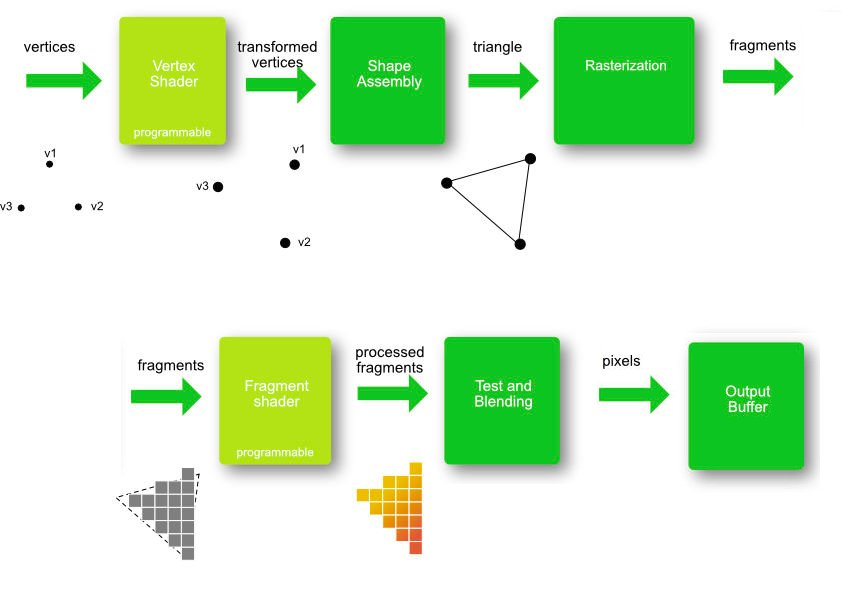

CERCETAREA METODELOR DE OPTIMIZARE A
PROGRAMĂRII GRAFICE 3D ÎN WEBGL
Actualitatea temei:
Grafica digitală este o activitate în care computerul este utilizat
pentru prelucrarea informației vizuale.
Odată cu apariția tehnologiilor web a aparut si necesitatea
prezentării graficii in browser.
Grafica în browser
HTML5 video element
CanvasRenderingContext2D
SVG
WebGL
De ce WebGL?
WebGL permite afisarea graficii 3D interactivă fără a utiliza
plug-in-uri. Funcționează cu orice platformă care acceptă OpenGL.
Avantajele WebGL asupra altor metode de prezentare a graficii:
- Datele elementului <video> ar trebui să fie video,
dar ar putea avea și audio sau imagini asociate cu acesta, dar nu poate
conține grafică interactivă spre deosebide de WebGL.
- SVG nu poate produce efecte complexe de iluminare și de
material reflectorizant
- Contextul WebGL este mult mai rapid decât contextul 2D deoarece WebGL permite utilizare accelerată GPU la
procesarea imaginilor
Exemple WebGL
biomuri generate pe bază de noise
Simulare Fluid
Structura chimică Ampicilline (screenshot)
Fibrilația atrială (screenshot)
Pipeline

Procesul de la declararea vârfurilor până la transformarea în culori
finale ale pixelilor se numește conducta grafică (grapics pipeline).
Această conductă conține o serie de pași prin care fiecare
cadru va fi procesat.
Structura unei aplicații WebGL:
Toate acestea sunt opționale cu exceptia programului de shader,
compus din vertex shader și fragment shader.
Buffer
Un buffer de date este o regiune a unei memorii folosită pentru
stocarea temporară a datelor în timp ce este mutată
dintr-un loc în altul.
Rasterizare
Procesul de transformare a figurilor geometrice definite într-un format vectorial
în fragmente (pixeli sau puncte) pentru a fi afișate pe un ecran video
se numeste rasterizare.
Fragment
Un pixel generat de procesul de rasterizare care are culoare,
adâncime, valoare, coordonate de textură și multe altele se
numeste fragment.
Shaders
Un shader este un mic program cu sintaxa asemănătoare limbajului C
și rulează pe GPU. Un shader program este compus din vertex
shader și fragment shader:
Vertex shader este executat pentru fiecare vârf
Fragment shader este executat pentru fiecare fragment,
valorile culorilor fiind interpolate între ele.
Interpolarea culorilor
Daca vârfurile unui triunghi au aceleași
culori atunci nu are loc interpolarea
Interpolarea are loc atunci când un triunghi are
culori diferite ale vârfurilor
Contextul WebGL
Contextul webGL
×
Vertex Shader & Fragment Shader
Exemplu de declarare a shader-ilor
Shader program
Compilarea shaderilor si crearea programului
de shader:
Textura
Iluminarea
WebGL nu știe nimic despre iluminare. Datele
despre fiecare vertex se stochează în variabile JavaScript de tip array.
Acesta oferă, de asemenea, funcțiile pentru a face calculele necesare
pentru a afla - în funcție de modelul de iluminare,
care ar trebui să fie culoarea unui anumit pixel.
Cub 3D
Tastați butonul de mai jos pentru randarea cuburilor 3D